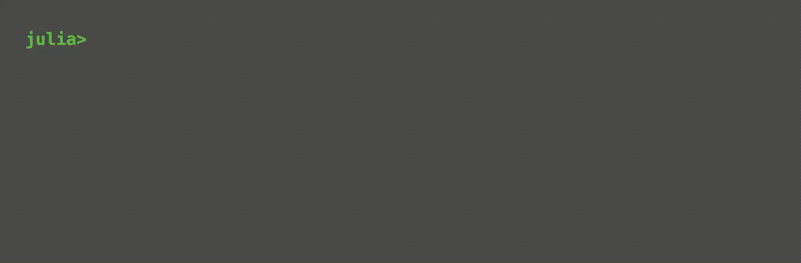

CryptoAPIs.jl
CryptoAPIs is a library written in Julia that combines API wrappers from various exchanges, simplifying access to market üíπ data.
Installation
If you haven't installed our local registry yet, do that first:
] registry add https://github.com/bhftbootcamp/Green.gitThen, to install CryptoAPIs, simply use the Julia package manager:
] add CryptoAPIs